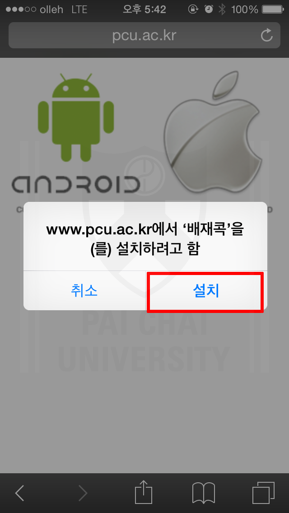
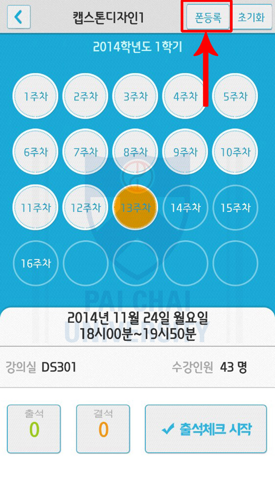
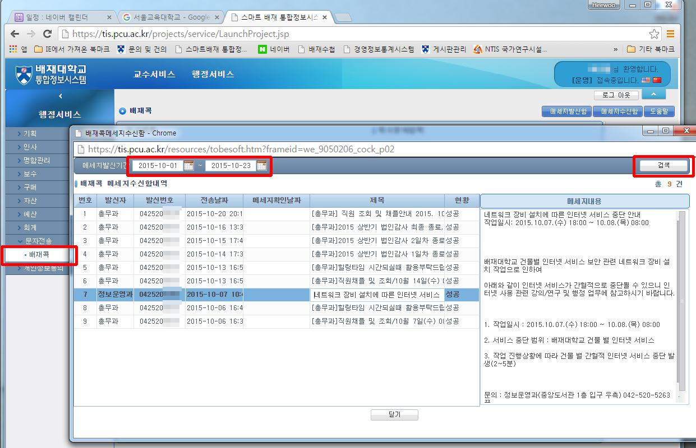
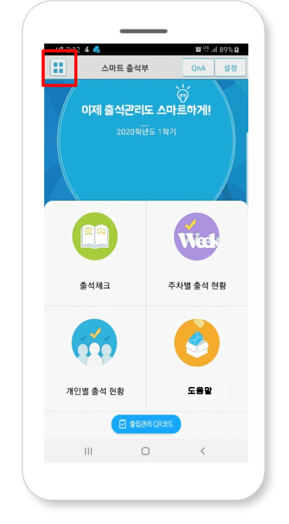

메뉴 > 1. 동영상매뉴얼
메뉴 > 2. 전자출결시스템이란?
메뉴 > 3. 배재콕(전자출결)앱 설치하기
-
배재콕 설치
 -
개인정보 동의 권한 허용
-
블루투스 사용 승인 요청
-
학번 및 통합정보비밀번호
메뉴 > 배재콕(전자출결)앱 설치하기 > 3.1 iOS 9.0 이상 사용자
설치 후 실행이 안될때
-
설정-일반-프로파일-Xid System Co., Ltd >'Xid System co., Ltd'을(를) 신뢰함 클릭
메뉴 > 교수 화면 > 4.1. 교수 출석 체크 설정
그림의 순서대로 화면-(1) 상단의 "설정"버튼 선택⇒화면-(2)
- 블루투스 항상켜기
스마트워치 등 블루투스가 항상 켜져 있어야 할 때 사용
전자출결이 종료되어도 블루투스는 켜져 있게 됨. - 수동출석체크 사용
화면-(3)과 같이 교수가 호명하며 출석을 체크할 수 있음 - 시간
자동 출석 체크시간 설정
학생의 수에 따라 30초 ~ 60초 까지 단계별 설정 가능 - 거리
대강의실 경우 민감도를 높게 설정하면 최대 100M 까지의 학생을 출석체크 할 수 있으며, 감도를 최소화 하면10M 내외의 학생을 체크 할 수 있습니다.(단, 휴대폰의 블루투스 특성에 영향을 받을 수 있음)
-
(1)
-
(2)
-
(3)
-
(4)
- 연강처리/차시별 처리
기본 값은 한 강의에 체크한 출/결값을 모두 동일하게 처리함(연강처리)
매시간 출석을 체크할 경우 화면-(4)와 같이 버튼을 누르면 화면-(5)처럼 매시간 출석처리가 가능함
-
(4)
-
(5)
메뉴 > 교수 화면 > 4.2. 출석체크 및 출결(지각) 변경하기
출석체크
- 그림의 순서대로 (3)번창에서 "출석체크 시작"을 하면 (4)번창이 실행되며 30초 동안 자동출석이 진행됩니다.
- 폰이 없거나 앱을 미설치한 학생은 이름을 선택하면 출석으로 이동되며 "출석처리마감"을 하면 서버에 저장됩니다.
- 필요 시 "자동출석체크"를 다시 할 수도 있습니다.
-
(1)
-
(2)
-
(3)
-
(4)
-
(5)
※ 교시별로 출석체크 하여 출결자료가 입력되어야 함(연강이면 2번체크)
출석체크 결과 초기화
출석, 지각, 결석 처리결과를 초기화 하는 버튼입니다.
-
(1)
-
(2)

출석-결석-지각 수정하기
배재콕 첫화면의 "개인별출석현황"이나 "주차별출석현황"에서 학생목록이나 주차별목록에서 버튼을 누르면 출결 상태가 수정된다.
-
(1)
-
(2)

-
(3)
-
(4)
-
(5)
메뉴 > 교수 화면 > 4.3. 쪽지 주고 받기(학생 앱 상태에 따라 수신결과 확인)
※ 학생 앱 상태에 따라 메시지 수신 상태 확인
-
(1)
-
(2)
-
(3)
메뉴 > 교수 화면 > 4.4. 배재콕 앱 설치 학생 확인

-
※ 배재콕 설치자 구분
메뉴 > 교수 화면 > 4.5. 폰등록(앱 설치안되는 피쳐폰사용자 블루투스 등록)
- 안드로이드 기종만 폰등록기능 있음
- 한 수업만 등록하면 다른 수업에도 적용됨
-
(1)
-
(2)
-
(3)
 -
(4)
-
(5)
-
(6)
-
(7)
-
(8)

메뉴 > 교수 화면 > 4.6. 아이폰이나 아이패드를 사용하는 교수님
출결처리시 3G나 LTE를 사용하는(WIFI를 꺼놓은) 안드로이드 폰을 사용하는 학생이 강의실에 있고 이 학생은 결석상태여서 같이 출석체크가 되는 상태여야 함.
메뉴 > 교수 화면 > 4.7. 스마트폰 아닌 교수님
1. 학과별 1대 아이패드 비치
- 출결처리시 3G나 LTE를 사용하는(WIFI를 꺼놓은) 안드로이드 폰을 사용하는 학생이 강의실에 있고 이 학생은 결석상태여서 같이 출석체크가 되는 상태여야 함.
2. 통합정보시스템에서 학생명부를 출력하시어 기존 방식대로 처리 후 배재콕에서 출석결과를 수동으로 입력
- 출석부 입력 주소 https://attend.pcu.ac.kr/pcu/online/#
메뉴 > 학생 화면 > 5.1. 안드로이드폰 사용자(블루투스 검색 허용)
안드로이드 폰 사용 학생의 경우
- 교수님이 출석을 부르게 되면 (2)화면이 나타나게 되며 일정시간 후 "출석확인 되었습니다" 하며 화면이 닫힙니다.
- (3)화면이 나타나는 학생은 해당과목-분반-주차에 따른 출석 여부를 확인한 후 이상시 교수님께 출석확인 요청하세요.
- 원인은 (4)번 응답을 늦게 한 경우 발생되며, (4)번 창은 기종에 따라 나타날 수 있으며 다음페이지의 블루투스 검색허용시간설정을 참고해 주세요.
- (4)화면이 나오면 반드시 "예"를 선택해 주세요.
-
(1)
-
(2)
-
(3)

-
(4)
안드로이드 폰 중에 블루투스 승인요청이 계속 뜨는 경우 블루투스 검색허용시간을 항상켜짐으로 설정하면 됨
- 하단과 같이 설정할 경우
Bluetooth 기능을 off 상태에서도 전자출결 시에만 운영됨 건전지 사용량 차이는 전체의 1% 내외로 거의 영향을 주지 않음 - 설정하지 않을 경우
전자출결 때 마다 Bluetooth 승인 메시지가 매번 표시됨 - Bluetooth 환경설정에서 다른 기기에서 검색을 허용으로 하고 검색허용 시간을 항상 켜짐으로 변경
- 기종에 따라 메뉴가 다소 다를 수 있음 (일부 기종은 메뉴버튼을 누를 경우 옵션을 변경할 수 있음)
-
(1)
-
(2)
-
(3)
메뉴 > 학생 화면 > 5.2. iOS(아이폰,아이패드) 사용자(출결체크시 앱 활성화)
아이폰 이름바꾸기
필수 : iOS(아이폰,아이패드)사용자인 경우 모바일 기기의 설정-일반-정보-"이름"이 기본적으로 iPhone 인것을 이메일아이디 등 구별할 수 있는 명칭으로 빈칸없이 설정해 놓으면 전자출결이 원활합니다.
-
(1)
-
(2)
-
(3)
-
(4)
-
(5)
iOS(아이폰,아이패드) 사용 학생(출결체크전 앱을 활성화해 놓으면 출결이 원활합니다.)
- 교수님이 출석을 부르게 되면 (1) 혹은 (2) 화면과 같이 상단에 출결확인 메시지가 나타나게 되며, 이 메시지를 "밀어서" 좌(우)로 움직이면 (4)화면이 나타나게 되며 출석 확인을 시도합니다.
- 이후 출석이 완료되면 (4)화면이 닫힙니다. 만일 (4)화면이 계속 남아있는 학생은 해당과목-분반-주차에 따른 출석 여부를 확인한 후 이상시 교수님께 출석확인 요청하세요.
-
(1)
-
(2)
-
(3)
-
(4)
메뉴 > 학생 화면 > 5.3. iOS(아이폰,아이패드) 경고 창이 떳을 때 설정
-
다음과 같은 화면이 뜬다면, 아래의 순서에 따라 해결해 주세요.
-
1. 설정 > 알림
-
2. 배재콕 어플 선택
-
3. 알림 허용
-
4. 알림 허용 활성화
메뉴 > 학생 화면 > 5.4. 스마트폰이 아닌 학생
- 피쳐폰사용 학생은 한 교수님께만 등록하면 다른 수업에서도 인식됨
- 2. 핸드폰이 없는 경우 교수님께 수동으로 출결을 요청(통합정보에서 출결결과를 확인할 수 있음)
메뉴 > 6. 신분증 기능(QR코드-도서관활용)
-
(1)
-
(2)
-
(3)
메뉴 > 7. 배재콕 문의처
- 각 학과 조교에게 문의(조교 OT를 통하여 교육실시)
- 교무처 학사지원팀
- 정보관리센터 정보관리팀
- 학사가이드 학사상담실 바로가기
메뉴 > 자동 출결체크 진행 순서 > 8.1. 교수 진행순서
1. 전자출결 App.에 로그인 후 해당 과목을 선택하여 자동출석체크 시작
※ 시행 초기에는 학생들의 전자출결 App. 설치여부 확인 필요
2. 1차 전자출결 시행 후, 출석인원과 자동체크 인원을 비교
3. 출결확인 결과 결석자 오류 대상 학생을 출석으로 변경
4. 상황에 따라 2차, 3차… 전자출결 시행 가능
5. 현재 출석인원과 전자출결 시스템으로 체크된 인원 수에 차이가 없는 경우 출석체크를 마감
6. 5번의 인원에 차이가 있는 경우,
① 재차 전자출결을 시행하거나
② 수업에 참여한 미출결 학생을 교수의 스마트폰에서 선택하여 “수기”로 출석처리 후 출석체크를 마감함 수기로 출석처리 할 경우 학생 얼굴이 표시된 출석부를 구현할 수 있음
메뉴 > 자동 출결체크 진행 순서 > 8.2. 학생 진행순서
1. 수업에 들어가기 전에
① 스마트폰에 전자출결 App. 설치
2. 전자출결 App.에 로그인 하고, 교수님의 전자출결 선언에 따라 자신이 자동출석 처리 되었는지 스마트폰을 통해 확인함
3. 출결사항이 오류가 발생할 경우 교수님께 출결처리 수정을 요청
4. 출결처리 후 휴식시간에 오류사항을 확인함
[장애처리 방법]
① 안내 자료에 따라 블루투스 설정 및 app설치
② 아이폰인 경우 스마트폰 이름을 학번으로 변경해 주세요.
메뉴 > 수신된 메시지를 확인하는 다른 방법 > 9.1. 학생 화면
1. 통합정보시스템-문자수신함-배재콕
2. 수신 일자 범위 설정 -조회
메뉴 > 수신된 메시지를 확인하는 다른 방법 > 9.2. 교직원 화면
1. 통합정보시스템-행정서비스-문자전송-배재콕-메세지수신함
2. 수신 일자 범위 조정
메뉴 > QR코드를 활용한 출입 기록 방법 > 10.1. 문진표 작성 및 출입
1. 대상: 배재콕 사용자(교직원 및 학생)
2. 문진표에 이상 징후 입력 시 건물 출입 불가
3. 즉시 감염병담당자에게 SMS전송됨
-
출입관리 QR코드 버튼 클릭
-
건물 출입 전 자가문진표 작성
-
QR코드 스캔
-
출입 등록 완료
메뉴 > QR코드를 활용한 출입 기록 방법 > 10.2. 건물 출입 확인증
-
왼쪽 상단 버튼 클릭
 -
건물 출입 확인증 클릭
-
건물 출입 확인증
메뉴 > QR코드를 활용한 출입 기록 방법 > 10.3. 건물 출입 명단 확인
-
출석체크 클릭
-
과목 선택
-
건물 출입 명단 선택
-
건물 출입 명단 확인
메뉴 > 11. 배재콕 일자별 수정내용 안내
2021.02.15(Android : 2.74, iPhone : 2.51)
1. 배재콕 2차인증 추가
2. 배재수첩 바로가기 추가
3. 인트라넷(게시판) 바로가기 추가
2020.09.08(Android : 2.72, iPhone : 2.47)
1. 코로나19 대비 건물 출입 및 문진표 기능 추가
- 자가 문진표 작성
- QR코드를 이용하여 건물 출입
2019.05.22(Android : 2.65, iPhone : 2.39)
1. 아이폰, 안드로이드(공통적용)
- 메인화면 쪽지보관함 읽지 않은 쪽지개수 표기
- 서버에서 읽어오지 않는 쪽지만 수신하여 로그인 속도 개선
- 보낸 소식 다중삭제 기능 추가
2. 아이폰 쪽지 발송 실패시 오류 수정
3. 아이폰 블루투스 MAC주소를 폰이름으로 설정하여 사용하도록 변경
4. 아이폰만 있을때 출석체크 기능 개선
2019.02.24(Android : 2.61, iPhone : 2.36)
1. 아이폰 결석현황, 미출결 알림 기능을 추가
2. 아이폰 시간표오류 수정
3. 안드로이드 OS 5.0버전 로그인 오류 수정
2019.02.01(Android : 2.57)
1. 안드로이드 메시지 전송 방식 변동에 따른 적용
2. 일부 핸드폰 교체시 배재콕 설치 에러 문제 해결
2018.11.14(iPhone : 2.34)
1. 쪽지 수신 속도 개선
2. IOS 12.1 블루투스 업데이트 사항 반영
2018.08.21(Android : 2.50, iPhone : 2.31)
1. 기기호환 및 스크립트 오류 수정
2. 바로가기 메뉴기능 추가
2018.03.28(Android : 2.47, iPhone : 2.30)
1. 개인별 출석현황 정렬 수정
2017.11.15(Android : 2.44, iPhone : 2.27)
1. 시간표 표출 시 연강 출력 오류 수정
2. 메시지 발신번호 수정입력 추가
2017.08.23
1. 동영상매뉴얼 추가
2017.05.23(iPhone : 2.24)
1. 출석체크 기능 향상
2. 메시지 알림 후 메시지 미 수신 에러 보완
2016.12.13(Android : 2.39, iPhone : 2.20)
1. 출석체크시 학생 리스트 스크롤 기능 개선
2. 메시지함 전체선택, 선택, 읽음, 삭제기능 추가
2016.09.26(Android : 2.38, iPhone : 2.17)
1 Android 6.0 이하버전으로 출시된폰에서 6.0으로 업그레이드 했을때 일부 폰이 블루투스가 정상작동하지 않는 문제 수정
2. ios10 으로 업그레이드시 화면일부가 비정상적으로 표시되는 부분 수정
2016.07.26(Android : 2.37, iPhone : 2.15)
1. 배재콕에서 쪽지를 보낼때 한번만 전송하기 (여러번 누르기 금지)
2. 아이폰교체시 새폰의 정보로 변경되도록 수정(자료복원시 문제점해결)
3. 지난 메시지보여주기 기간 최대1개월 한정(이전메시지는 통합정보에서 확인 가능)
2016.03.02. (Android : 2.33, iPhone : 2.09)
1. 신분증에 영문이름 표시
2. 해당학기에 수업이 없는 학생이 학생증을 열었을때 오류 수정
2016.02.23. (Android : 2.31, iPhone : 2.07)
1. 테이블형 시간표 추가
2. 수발신 통합정보에서 조회 가능(앱에서 발송된 메시지 포함)
3. 해당학기 수업이 없는 학생,교원,직원은 현재학기 표시되는부분에 오늘 날짜를 표시
2015.12.18. (Android : 2.29, iPhone : 2.05)
1. 안드로이드 : Android 6 에서 출석체크 안되던 부분 수정(교수와 학생 모두 업데이트 필수)
2. 안드로이드,아이폰 : 출결상세에서 시간 순서가 바뀌어 나오는 현상 수정
2015.09.21.
1. iOS 9.0 업그레이드 사용자에 따른 프로그램 수정
2. 설치후 실행이 안될 때 조치 방법 : 설정-일반-프로파일-Xid System Co., Ltd >'Xid System co., Ltd'을(를) 신뢰함 클릭
2015.09.07.
1.쪽지 정렬이 앱에서 보낸것과 API로 보낸것이 날짜표시 방식의 다름을 감안하여 최신순 정렬
2. SKY폰에서 개인별 출결정보의 사진이 너무 공간 차지로 상세가 작게 표시되던 부분 수정
3. 일부 교수님의 오늘수업목록의 색 반전 수정
4. 일부 과목 출석현황의 날짜가 표시되지 않던 부분 수정
2015.08.20.
1. 과목별 자동출결체크 시간과 블루투스 인식거리 설정 기능 (수업 인원/강의실 크기에 맞게 )
2. 수동출결 처리 기능, 사진 추가
3. 연속강좌를 한건으로 처리 기능
4. 출석부 수정시 일괄 반영 가능(주차별 모든 학생, 학생별 15주차)
5. 학생별 간단한 메모 기능
6. 블루투스 꺼짐 방지 가능(웨어러블 기어 상시사용자)